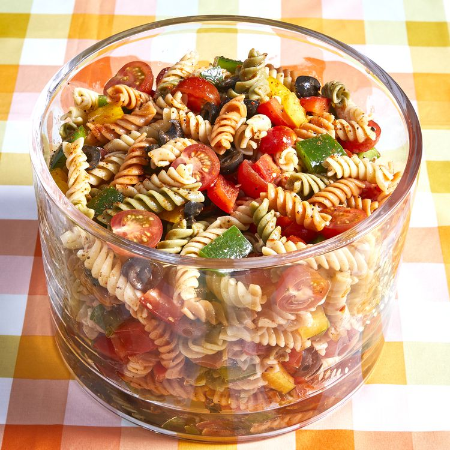

Pasta Salad

This pasta salad recipe was given to me by a dear friend many years ago, and I've been making it ever since! It's great for barbecues.
I was looking for a new pasta salad and I came across this one. It was perfect. I didn't change a thing. Pasta salad doesn't usually go over big at my parties....I ran out of this one and everyone left with a copy of the recipe.
- 1 pound tri colored pasta
- 1 bottle Italian-style salad dressing
- 6 tablespons salad seasoning mix
- 2 cups cherry tomates, dived
- 1 green bell pepper, chopped
- 1 red bell pepper, diced
- 1/2 yellow bell pepper, chopped
- 1 can black olives, chopped
- Bring a large pot of lightly salted water to a boil. Cook pasta in the boiling water, stirring occasionally, until tender yet firm to the bite, about 10 to 12 minutes; rinse under cold water and drain.
- Whisk Italian dressing and salad spice mix together until smooth.
- Combine pasta, tomatoes, bell peppers, and olives in a salad bowl; pour dressing over salad and toss to coat. Refrigerate salad, 8 hours to overnight